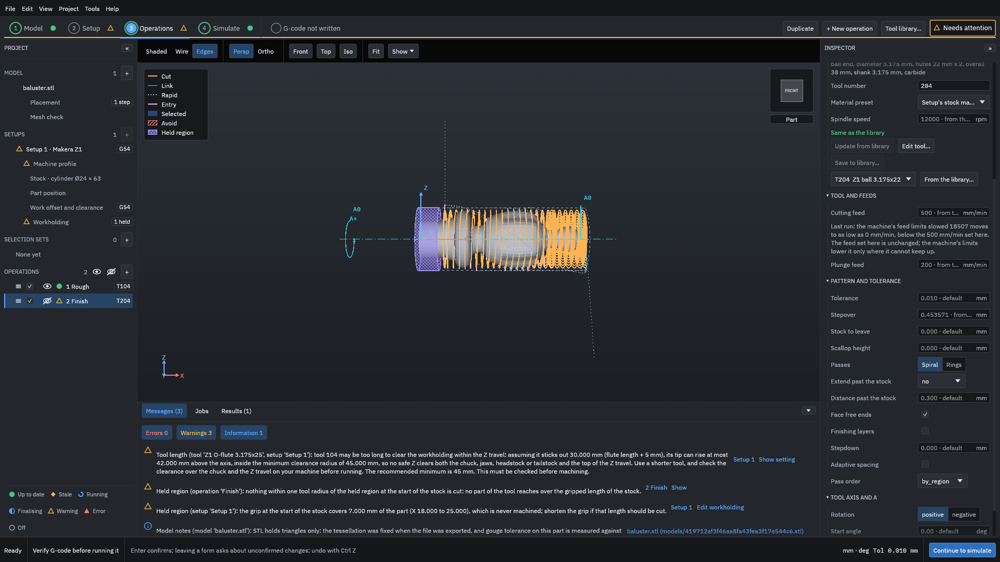

8. Generate the toolpaths
- Press Generate stale (2) at the bottom right. “Stale” means the operation has no up-to-date toolpath.
- Wait until the status bar reads Ready again. 1 Rough shows a green dot in the project tree: it is up to date. 2 Finish shows a warning mark: it is up to date too, with a warning to read.
The status bar shows the progress. On this part it takes a few minutes on a computer with no graphics card, and less with one.

The orange lines are the roughing toolpath in the front view, with the held region hatched on the left. The eye icon beside an operation shows or hides its path in the view; hiding a path changes only the view, never what is machined. Use the view buttons (Front, Top, Iso, Fit) and the mouse to look around.
The Messages list under the view now holds three warnings: the tool-length warning from step 7, the setup’s grip warning from step 5, and the warning on 2 Finish. The last says that nothing within one tool radius of the held region is cut: the grip leaves the plain end, and the part of the surface beside it, uncut. That is what this tutorial means to do, so the project chip still reads Needs attention. Click a message to see the operation it is about.
Press Continue to simulate.